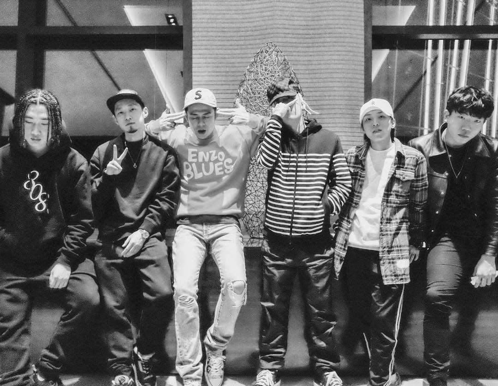

- CHANGMO
- HASH SWAN
- ASH ISLAND
AMBITION MUSIK
2016년 9월 일리네어 레코즈의 CEO인 도끼와 더콰이엇은 별도의 산하 레이블 설립을 발표하였다. AMBITION MUSIK이라는 이름의 레이블이며 레이블 설립을 발표한 뒤에 다음 날부터 하루에 한 명씩 멤버를 공개했다. 첫째 날에는 김효은, 둘째 날에는 창모, 마지막 날에는 Hash Swan의 영입을 공개했다. 그 후, 오랜 시간 동안 새 멤버가 입단하지 않아 앰비션 뮤직 역시 일리네어 레코즈 처럼 3인체제를 유지할 것이라는 예상이 있었으나 2018년 11월 21일, ASH ISLAND가 창모와 함께 한 싱글 를 발매하면서 새로운 멤버로 합류하였다.2019년 6월 11일, 식케이, 펀치넬로, 사이먼 도미닉 등 많은 아티스트들과 작업한 프로듀서 Way Ched가 14일(금) 오후 6시에 발매되는 그의 첫 정규 앨범 의 소식과 함께 새로운 멤버로 합류하였다. 2019년 6월 18일, 여러 앨범을 내며 활발한 활동을 보여준 릴러말즈가 21일(금) 오후 6시에 발매되는 정규앨범 의 소식과 함께 새로운 멤버로 드디어 합류하였다. 2019년 7월 18일, 영입 후보로 자주 거론이 됐었던 YTC4LYF 크루 소속이자 질라네이션 소속 래퍼 ZENE THE ZILLA를 영입하였다.
